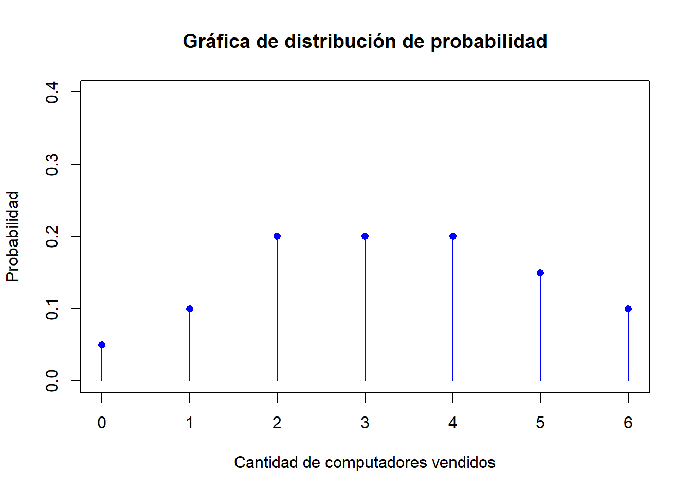
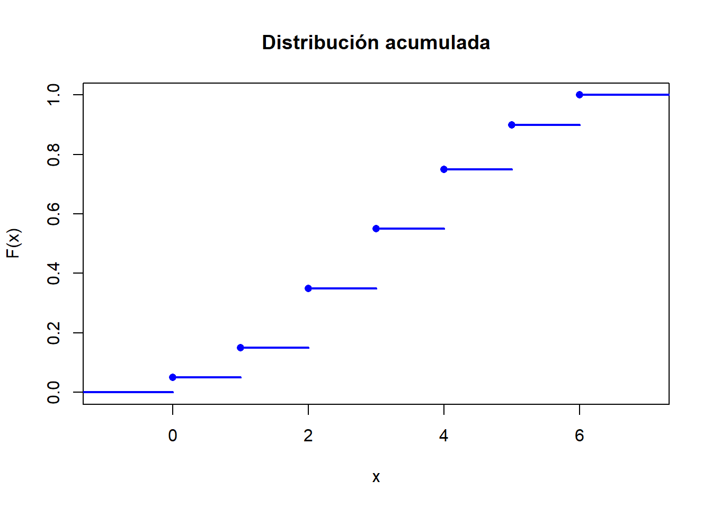

3 Probabilidad
3.1 Variables aleatorias
En un experimento aleatorio hay frecuentemente más interés por ciertos valores numéricos que se pueden deducir de los resultados de un experimento aleatorio que por los resultados en sí.
Una variable aleatoria es una función de valor real para la cual el dominio es un espacio muestral.
3.1.1 Variables aleatorias discretas
Se dice que una variable aleatoria \(Y\) es discreta si puede tomar sólo un número finito o contablemente infinito de valores distintos.
La probabilidad de que \(Y\) tome el valor \(y\), \(P(Y=y)\), se define como la suma de las probabilidades de todos los puntos muestrales en \(S\) a los que se asigna el valor \(y\). A veces denotaremos \(P(Y=y)\) por \(p(y)\) o \(f(y)\).
La distribución de probabilidad para una variable aleatoria discreta, es una fórmula, tabla o gráfica que da los valores posibles de \(Y\) y la probabilidad \(P(Y=y)=f(y)\) asociada a cada valor de \(Y\) que satisface las siguientes propiedades:
- \(0\leq P(Y=y)\leq 1\)
- \(\sum P(Y=y)=1\)
La función de distribución acumulada de una variable aleatoria \(Y\) está definida para todo número real \(y\) como:
\[\begin{equation*} F(y)=P(Y\leq y)=\displaystyle\sum _{y_i\leq y}P(y_i) \end{equation*}\]
3.2 Valor esperado y varianza
3.2.1 Valor esperado
Sea \(Y\) una v.a. discreta con función de distribución de probabilidad \(P(Y=y)\). La media o se define como: \[\begin{equation*} \mu=E(Y)=\sum yP(Y=y) \end{equation*}\]
3.2.2 Varianza
Sea \(Y\) una v.a. discreta con función de distribución de probabilidad \(P(Y=y)\) y media \(\mu\). Entonces la se define como \[\begin{equation*} V(Y)=\sigma^2=E[(Y-\mu)^2]=\sum (y-\mu)^2P(Y=y) \end{equation*}\] La es igual a la raíz cuadrada positiva de su varianza.
Una forma sencilla de calcular la varianza es: \[ V(Y)=E(Y^2)-E(Y)^2 \]
3.2.3 Ejemplo
El número de computadores vendidos al día en una tienda viene definido por la siguiente distribución de probabilidad:
| \(X\) | 0 | 1 | 2 | 3 | 4 | 5 | 6 |
|---|---|---|---|---|---|---|---|
| \(P(X=x)\) | 0.05 | 0.10 | 0.20 | 0.20 | 0.20 | 0.15 | 0.10 |
- Graficar la distribución de probabilidad
Ingresamos como vectores los valores de \(X\) y su respectiva probabilidad, de la siguiente forma:
x=c(0,1,2,3,4,5,6)
p=c(0.05,0.10,0.20,0.20,0.20,0.15,0.10)
plot(x,#valores que toma X
p,#probabilidades
type="h",#tipo de linea
ylim=c(0,0.4),#limites del eje y
col="blue",#color
main="Gráfica de distribución de probabilidad",#título
xlab="Cantidad de computadores vendidos",#titulo eje x
ylab="Probabilidad"#titulo eje y
)
points(x,p,col="blue",pch=16) * Hallar la función de distribución acumulada, \(F(x)\).
Calculamos la función de distribución acumulada así: \[ P(X\leq x)=\displaystyle\sum _{x_i\leq x}P(X=x) \]
## [1] 0.05 0.15 0.35 0.55 0.75 0.90 1.00| \(X\) | 0 | 1 | 2 | 3 | 4 | 5 | 6 |
|---|---|---|---|---|---|---|---|
| \(P(X=x)\) | 0.05 | 0.10 | 0.20 | 0.20 | 0.20 | 0.15 | 0.10 |
| \(F(x)\) | 0.05 | 0.15 | 0.35 | 0.55 | 0.75 | 0.90 | 1 |
- Graficar \(F(x)\)
La gráfica la realizamos con el siguiente código:
## [1] 0.05 0.15 0.35 0.55 0.75 0.90 1.00f1<-stepfun(x,c(0,acumulada))
plot(f1,
verticals=FALSE,
main="Distribución acumulada",
lwd=2,
pch=16,
ylab="F(x)",
col="blue")
*Calcular \(P(X\leq 3)\)
\[ P(X\leq 3)=F(3)=0.55 \] La probabilidad de que el número de computadores vendidos en una tienda sea máximo 3 es de 0.55.
*Calcular \(P(X> 4)\)
\[ P(X>4)=1-P(X\leq 4)=1-F(4)=1-0.75=0.25 \] La probabilidad de que se venda más de 4 computadores en una tienda es de 0.25.
*Calcular \(P(2\leq X\leq 5)\)
\[\begin{align*} P(2\leq X\leq 5)&=P(X\leq 5)-P(X<2)\\ &=P(X\leq 5)-P(X\leq 1)\\ &=F(5)-F(1)\\ &=0.9-0.15\\ &=0.75 \end{align*}\] La probabilidad de que se venda entre 2 y 5 computadores en una tienda es de 0.75.
- Calcular el valor esperado de \(X\).
## [1] 3.25Se espera vender 2.8 computadores en un día, en una tienda.
- Calcular la varianza de\(X\)
## [1] 3.25## [1] 13.25## [1] 1.639363.2.4 Ejercicio
La cantidad de ambulancias que llegan a una sala de emergencias, en un hospital, en un día, está dada por
| \(X\) | 0 | 1 | 2 | 3 | 4 | 5 | 6 |
|---|---|---|---|---|---|---|---|
| \(P(X=x)\) | 0.05 | 0.05 | 0.1 | 0.20 | 0.30 | 0.15 |
- ¿Cuál es la probabilidad de que lleguen 6 ambulancias en un día?
- Grafique \(P(X=x)\)
- Calcule \(F(x)\)
- Grafique \(F(x)\)
- Calcule \(E(X)\)
- Calcule la varianza
3.3 Distribución Binomial
3.3.1 Características
Un experimento binomial tiene las siguientes características: * Consiste en un número fijo,\(n\), de pruebas idénticas. * Cada prueba produce dos resultados, éxito o fracaso. * La probabilidad de éxito es igual \(p\) y la de fracaso es igual a \(q=1-p\). * Las pruebas son independientes. * Se está interesado en \(Y\) el número de éxitos observado durante las \(n\) pruebas \(y=0,1,2,...,n\).
3.3.2 Ejemplo
- Un sociólogo está interesado en la proporción de profesores de colegios que sean hombres.
- Una comerciante en bebidas gaseosas está interesada en la proporción de quienes toman refresco de cola y que prefieren la marca de ella.
- Un genetista está interesado en la proporción de la población que posee un gen vinculado a la enfermedad de Alzheimer.
3.3.3 Función de distribución
Se dice que una variable aleatoria \(Y\) tiene una distribución Binomial, denotada por \(Y\sim B(y;n,p)\) de parámetros \(n\) y \(p\), si su función de probabilidad está dada por: \[\begin{equation*} P(Y=y)=\binom{n}{y}p^y(1-p)^{n-y}\quad y=0,1,...,n\quad 0 \leq p\leq 1 \end{equation*}\] Si \(n=1\), la distribución binomial recibe el nombre de distribución Bernoulli de parámetro \(p\).
El valor esperado y la varianza están dados por: \[\begin{align*} E\left( Y\right) &=np.\\ \sigma^2=Var(X)&=npq;\quad \textit{donde}\quad q:=1-p.\\ \sigma &=\sqrt{npq};\quad \textit{donde}\quad q:=1-p. \end{align*}\]
3.3.5 Ejemplo
Una encuesta de Harris Interactive para InterContinental Hoteld and Resorts preguntó: ‘Cuando viaja al extranjero, ¿suele aventurarse usted solo para conocer la cultura o prefiere permanecer con el grupo de su tour y apegarse al itinerario?’ Se encontró que 23% prefiere permanecer con el grupo de su tour (USA Today, 21 de enero de 2004).
- ¿Cuál es la variable que se mide?
X:=Cantidad de viajeros que prefieren permanecer con el grupo de su tour
*¿Cuál es la distribución de la variable, para una muestra de 6 viajeros?
\[ X\sim B(n=6,p=0.23) \]
- ¿Cuál es la probabilidad de que en una muestra de seis viajeros, dos prefieran permanecer con su grupo?
\[ P(X=2)=0.279 \]
la probabilidad de que en una muestra de seis viajeros, dos prefieran permanecer con su grupo es de 0.279.
## [1] 0.2789394- ¿Cuál es la probabilidad de que en una muestra de seis viajeros, por lo menos dos prefieran permanecer con su grupo?
\[ P(X\geq 2)=1-P(X<2)=1-P(X\leq 1)=1-0.582=0.418 \]
la probabilidad de que en una muestra de seis viajeros, dos prefieran permanecer con su grupo es de 0.418.
## [1] 0.4180414- ¿Cuál es la probabilidad de que en una muestra de 10 viajeros, ninguno prefiera permanecer con su grupo?
\[ P(X= 0)=0.073 \]
la probabilidad de que en una muestra de diez viajeros, ninguno prefiera permanecer con su grupo es de 0.073
## [1] 0.0732668- Calcule el valor esperado para una muestra de 6 viajeros
\[ \mu=E(X)=np=(6)(0.23)=1.38 \]
Se espera que 1.38 viajeros quieran permanecer con su grupo en el tour.
## [1] 1.38- Calcule la varianza
\[ \sigma^2=npq=(6)(0.23)(1-0.23)=(6)(0.23)(0.77)=1.063 \]
## [1] 1.06263.4 Distribución Normal
3.4.1 Importancia
La distribución de probabilidad normal es una distribución continua que es simétrica.\ * En muchos procesos aleatorios los datos obtenidos mediante mediciones se ajusta a este tipo de distribución. * Con frecuencia se usan las probabilidades normales para aproximar otras distribuciones de probabilidad (binomial y de poisson)
3.4.2 Función de densidad
La función de densidad está dada por: \[\begin{equation*} f(y)=\frac{1}{\sqrt{2\pi\sigma^2}}\exp{\left\{-\frac{1}{2}\left(\frac{y-\mu}{\sigma}\right)^2\right\}} \end{equation*}\] con media \(\mu\) y desviación \(\sigma\), \(\pi=3.1416\) y \(\exp=e=2.7183\)
3.4.3 Propiedades
- La normal es simétrica con respecto a su media
- La forma de la distribución se determina por \(\sigma\)
- Valores grandes de \(\sigma\) reducen la altura de la curva e incrementan su amplitud.
- Valores pequeños de \(\sigma\) aumentan la altura de la curva y reducen la amplitud.
3.4.4 Función de densidad Normal estándar
Una variable normal con media \(\mu=0\) y desviación estándar \(\sigma=1\) se le denomina normal estándar o Z, su función de densidad de probabilidad está dada por: \[\begin{equation*} f(y)=\frac{1}{\sqrt{2\pi}}\exp\left\{-\frac{1}{2}y^2\right\} \end{equation*}\]
Cualquier distribución normal \(Y\) con media \(\mu\) y desviación estándar \(\sigma\) puede ser convertida en una por medio de la transformación: \[\begin{equation*} Z=\frac{y-\mu}{\sigma} \end{equation*}\] a esta transformación se le llama estandarización o tipicación.
3.4.5 Comandos en R
- \(P(Y\leq y)=pnorm(y,media,desviacion)\)
- \(P(Z\leq z)=pnorm(z)\)
- \(P(Y\geq y)=pnorm(y,media,desviacion,lower.tail=FALSE)\)
- \(P(Z\geq z)=pnorm(z,lower.tail=FALSE)\)
- \(P(Y\geq y)=\alpha\); \\(y= qnorm(alpha,media, desviacion,lower.tail=FALSE)\)
3.4.6 Ejemplo
El total de las ventas diarias en un pequeño restaurante tiene una distribución de probabilidad que es aproximadamente normal, con media $1230 y desviación estándar $120.
- ¿Cuál es la variable que se mide?. X:=Total de las ventas diarias en un pequeño restaurante
- ¿Cuál es la distribución? \[ X\sim N(\mu=1230,\sigma=120) \]
- ¿Cuál es la probabilidad de que las ventas excedan de $1400 para un día determinado?
\[ P(X>1400)=1-P(X\leq 1400)=0.078 \]
la probabilidad de que las ventas excedan de $1400 para un día determinado es de 0.078
## [1] 0.0782902- ¿Cuál es la probabilidad de que las ventas sean menores a $1250 para un día determinado?
\[ P(X<1250)=P(X\leq 1250)=0.566 \]
la probabilidad de que las ventas sean menores a $1250 para un día determinado es de 0.566
## [1] 0.5661838- ¿Cuál es la probabilidad de que las ventas estén entre $1000 y $1400 para un día determinado?
\[ P(1000\leq X\leq 1400)=P(X\leq 1400)-P(X\leq 1000)=0.894 \]
la probabilidad de que las ventas sean menores a $1250 para un día determinado es de 0.566
## [1] 0.8940697